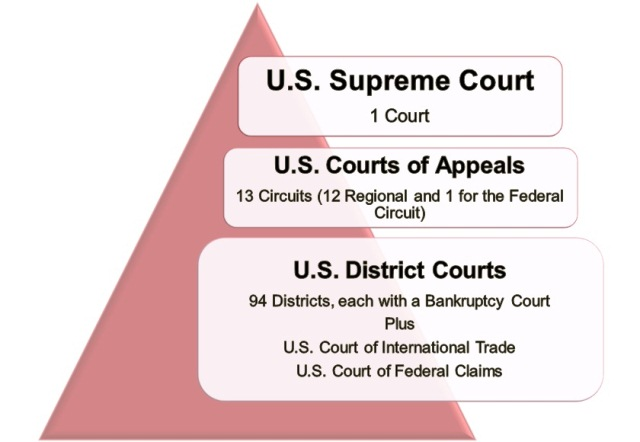
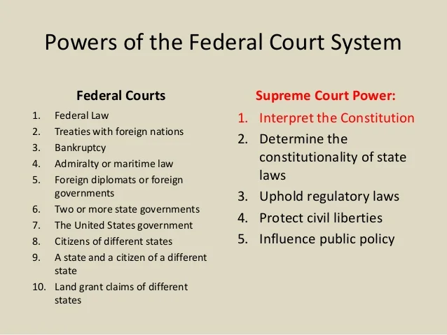
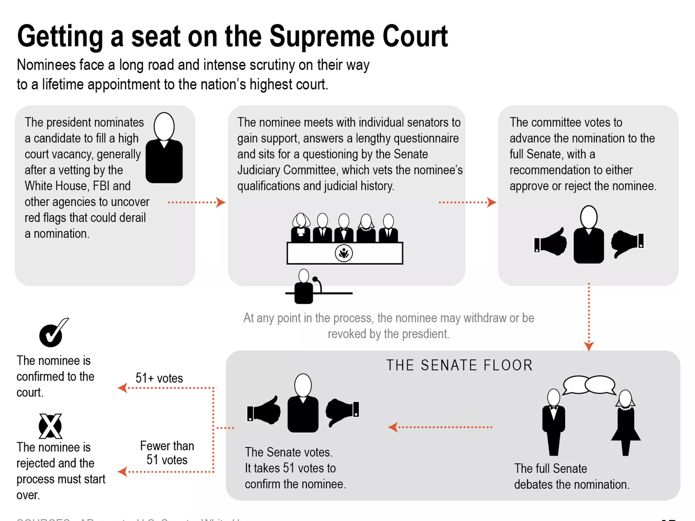

Structure of the US Court system:

The structure of the US court system is as follows.
Article I Courts, Bankruptcy Courts, District Courts, Courts of Appeals,
and finally the Supreme Court.
Powers of the Judicial Branch:

The primary power of the judicial branch is
to interpret laws, apply them to individual cases, and determine whether
laws violate the Constitution through a process called judicial review
Appointment process:

The President consults with Senators before nominating a candidate, then sends the nomination to the Senate
Judiciary Committee. After holding hearings and reviewing the nominee’s qualifications, the Committee
votes and makes a recommendation to the full Senate. The Senate debates the nomination, and since 2017,
only 51 votes are needed to end the debate. A simple majority confirms the nominee, with the Vice President
casting a tie-breaking vote if needed.
2 Major Court Case Precedent and change throughout history:
Board of Education of Independent School District #92 of Pottawatomie County v. Earls
(2002):
- In Veronia School District v. Acton (1995), the Supreme Court held that random drug tests of student
athletes do not violate the Fourth Amendment's
prohibition of unreasonable searches and seizures. Some schools then began to require drug tests of
all
students in extracurricular activities.
This president was enforced in the Board of Education of Independent School District #92 of
Pottawatomie
County v. Earls Supreme Court case when the Supreme Court ruled
against Earls and upheld the existing president.
Tinker v. Des Moines (1969):
- To protest the Vietnam War, Mary Beth Tinker and her brother wore black armbands to school. Fearing
a
disruption, the administration prohibited wearing such armbands. The Tinkers were removed from
school
when they failed to comply, but the Supreme Court ruled that their actions were protected by the
First
Amendment.
Current Supreme court case and its impact:
TikTok Inc., et al. v. Garland (Amicus):
- The Supreme Court will decide whether a law that effectively bans TikTok in the United States
violates
the First Amendment rights of more than 170 million Americans who use the social media platform. The
law
also allows the President to ban other foreign-owned apps deemed a national security threat, opening
the
door to future abuse and censorship. The ban on TikTok is set to go into effect on January 19, 2025.